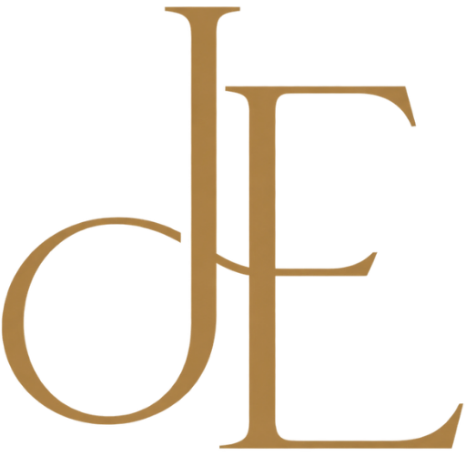

Nom del grup
Grup JE
El grup es diu JE. El monograma és la marca comuna de Jan Altisent, Eloy Gonzalo i Jan Felip.
Membres
Qui som i què fem
-

Disseny i verificació
Jan Altisent
Dissenya la interfície i en comprova la qualitat. Treballa el web amb una mirada de producte i de desenvolupament multiplataforma.
-

Edició i verificació
Eloy
Edita i verifica el lliurament. Revisa que el codi i la documentació segueixin la guia d'estils i es puguin llegir com un treball d'equip.
-

Coordinació
Jan Felip Urgell
Coordina el ritme del grup. Fa visibles els acords, els terminis i la lectura de conjunt del lloc col·lectiu.
Compromís
El rol de cadascú
-
Jan Altisent
Es compromet a dissenyar la interfície i a verificar que el resultat es vegi professional: jerarquia, color i una experiència clara, també quan el treball toqui el desenvolupament multiplataforma.
-
Eloy
Es compromet a editar i verificar el codi i els textos del lliurament, a fer complir la guia d'estils i a avisar quan una peça no encaixa amb la resta.
-
Jan Felip Urgell
Es compromet a coordinar tasques i terminis, a deixar els acords per escrit i a cuidar que la pàgina col·lectiva es llegeixi com un sol projecte.
Guia d'estils
Colors principals
La pàgina fa servir Libre Baskerville i la mateixa paleta del grup: Paper, Ink, Terracotta, Olive i Muted.
-
Paper #F4F0E8
Text i monograma sobre fons fosc.
-
Ink #242320
Fons de la pàgina i de la marca.
-
Terracotta #B85F43
Èmfasi, rols i enllaços actius.
-
Olive #5D6244
Etiquetes i detalls secundaris.
-
Muted #6B665C
Text secundari de la guia.